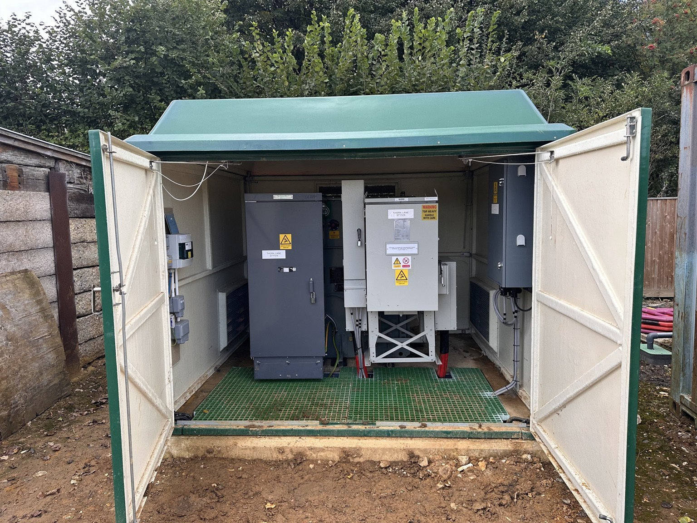
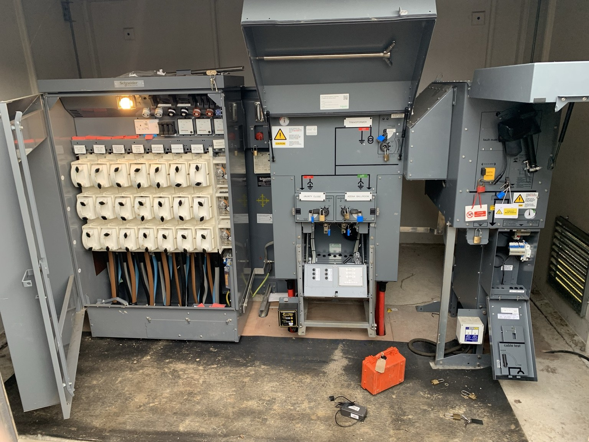
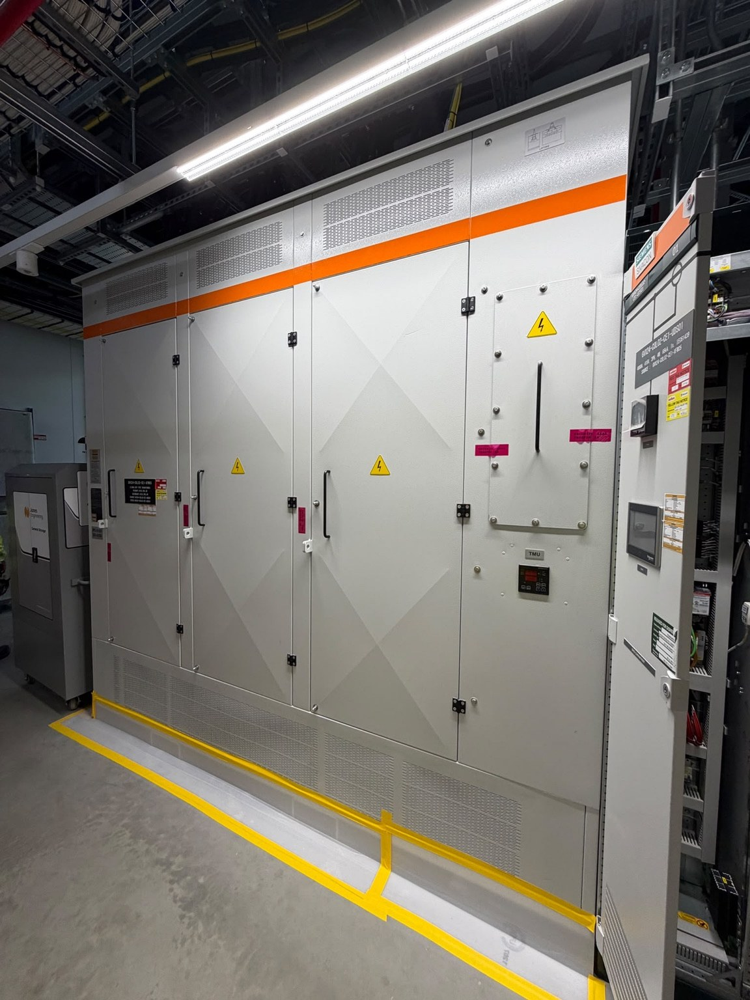
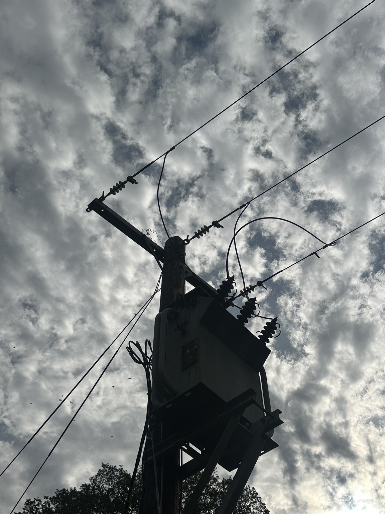

Network Operations
HV operational control, switching, isolation, earthing, planned outages and operational handover.
UTILITIES & INFRASTRUCTURE
More than two decades of HV operational and project experience across UK electricity distribution environments.
DISTRIBUTION NETWORKS
HV operational control, switching, isolation, earthing, planned outages and operational handover.
Mobilisation, specialist resourcing, construction interfaces, commissioning and programme delivery.
Fault response and restoration of legacy network conditions to normal operating arrangements.




CASE STUDY
Powertec successfully tendered for and mobilised a 20kV asset-replacement programme for a Tier 1 utility contractor, establishing the specialist delivery resource and holding combined project-management and SAP responsibility.
We understand the network beyond the project boundary — and the operational consequences of every construction and commissioning decision.